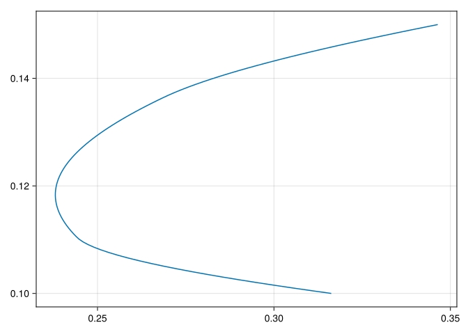

using CSV, DataFrames
using JuMP, Ipopt, LinearAlgebra
using CairoMakie24 Portfolio Optimization
24.1 In This Chapter
Optimization in a portfolio context with examples of asset selection under different constraints and objectives.
24.2 Setup
24.3 The Data
μ = [0.1, 0.15, 0.12] # returns
ρ = [0.1 0.05 0.03;
0.05 0.12 0.04;
0.03 0.04 0.08] # covariances
nₐ = length(μ) # number of assets324.4 Theory
Harry Markowitz introduced the modern portfolio theory in 1952. The main idea is that investors are pursuing to maximize their expected return of a portfolio given a certain amount of risk. By definition any portfolio yielding a higher return must have higher amount of risk, so there is a trade-off between desired expected returns and allowable risks. The risk versus maximized expected return relationship can be plotted out as a curve, a.k.a. the efficient frontier.
24.5 Mathematical tools
24.5.1 Mean-variance optimization model
Mean-variance optimization is a mathematical framework that seeks to maximize expected returns while minimizing portfolio variance (or standard deviation). It involves calculating the expected return and risk of individual assets and finding the optimal combination of assets to achieve the desired risk-return tradeoff.
\[\begin{align*} \text{minimize} \quad &{w}^{T}\Sigma{w}\\ \text{subject to} \quad &{R}^{T}\geq{\mu}_{\text{target}}\\ &{1}^{T}{w}={1}\\ &{w}\geq{0} \end{align*}\]
# Create an optimization model
model = Model(optimizer_with_attributes(Ipopt.Optimizer, "print_level" => 0))
# Set up weights as variables to optimize
@variable(model, w[1:nₐ] >= zero(0.0))
# Objective: minimize portfolio variance
@objective(model, Min, sum(w[i] * ρ[i, j] * w[j] for i in 1:nₐ, j in 1:nₐ))
# Constraints: Sum of portfolio weights should equal to 1, and all weights should be zero or positive
@constraint(model, sum(w) == 1)
# May also add additional constraints
# target_return = 0.1
# @constraint(model, dot(μ, w) >= target_return)
# Solve the optimization problem
optimize!(model)
# Print results
@show "Optimal Portfolio Weights:"
for i = 1:nₐ
@show ("Asset ", i, ": ", value.(w)[i])
end
******************************************************************************
This program contains Ipopt, a library for large-scale nonlinear optimization.
Ipopt is released as open source code under the Eclipse Public License (EPL).
For more information visit https://github.com/coin-or/Ipopt
******************************************************************************
"Optimal Portfolio Weights:" = "Optimal Portfolio Weights:"
("Asset ", i, ": ", value.(w)[i]) = ("Asset ", 1, ": ", 0.3333333012309821)
("Asset ", i, ": ", value.(w)[i]) = ("Asset ", 2, ": ", 0.16666675086886984)
("Asset ", i, ": ", value.(w)[i]) = ("Asset ", 3, ": ", 0.4999999479001481)In mean-variance portfolio optimization, incorporating a cost of risk-based capital on assets is a practical consideration that reflects the additional capital required to support riskier assets in a portfolio. This approach ensures that the optimization process not only maximizes returns relative to risk but also considers the regulatory or internal cost implications associated with holding riskier assets.
\[\begin{align*} \text{maximize} \quad &{w}^{T}R_{adj}\\ \text{subject to} \quad &{w}^{T}\Sigma{w}\le\sigma^2_{max}\\ &{1}^{T}{w}={1}\\ &{w}\geq{0} \end{align*}\]
where \(R_{adj} = [(\mu_1 - \lambda_1), (\mu_2 - \lambda_2), ..., (\mu_N - \lambda_N)]\) is the adjusted expected returns.
# Create an optimization model
model = Model(optimizer_with_attributes(Ipopt.Optimizer, "print_level" => 0))
r = μ .- [0.01, 0.02, 0.05] # risk adjusted returns
σ²_max = 0.1 # maximum portfolio variance
# Set up weights as variables to optimize
@variable(model, w[1:nₐ] >= zero(0.0))
# Objective: minimize portfolio variance
@objective(model, Max, sum(w[i] * r[i] for i in 1:nₐ))
# Constraints: Sum of portfolio weights should equal to 1, and all weights should be zero or positive
@constraint(model, sum(w) == 1)
# Constraints: Sum of allowable portfolio variance is limited
@constraint(model, sum(w[i] * ρ[i, j] * w[j] for i in 1:nₐ, j in 1:nₐ) <= σ²_max)
# May also add additional constraints
# target_return = 0.1
# @constraint(model, dot(μ, w) >= target_return)
# Solve the optimization problem
optimize!(model)
# Print results
@show "Optimal Portfolio Weights:"
for i = 1:nₐ
@show ("Asset ", i, ": ", value.(w)[i])
end"Optimal Portfolio Weights:" = "Optimal Portfolio Weights:"
("Asset ", i, ": ", value.(w)[i]) = ("Asset ", 1, ": ", 0.16666454953827514)
("Asset ", i, ": ", value.(w)[i]) = ("Asset ", 2, ": ", 0.8333339906581219)
("Asset ", i, ": ", value.(w)[i]) = ("Asset ", 3, ": ", 1.4598036030472386e-6)24.5.2 Efficient frontier analysis
The efficient frontier represents the set of portfolios that offer the highest expected return for a given level of risk or the lowest risk for a given level of return. Efficient frontier analysis involves plotting risk-return combinations for different portfolios and identifying the optimal portfolio on the frontier.
# Create an optimization model
model = Model(optimizer_with_attributes(Ipopt.Optimizer, "print_level" => 0))
# Set up weights as variables to optimize
@variable(model, w[1:nₐ] >= zero(0.0))
# Define objective function: minimize portfolio variance
portfolio_variance = w'ρ * w
@objective(model, Min, portfolio_variance)
# Constraints: Sum of portfolio weights should equal to 1, and all weights should be zero or positive
@constraint(model, sum(w) == 1)
# Generate a range of target returns
points = 100
target_returns = range(minimum(μ), maximum(μ), length=points)
efficient_frontier = []
for target_return in target_returns
# Add additional constraint for target return
@constraint(model, c, dot(μ, w) == target_return)
# Solve the problem
optimize!(model)
# Show solution
if termination_status(model) == MOI.LOCALLY_SOLVED
push!(efficient_frontier, (sqrt(objective_value(model)), target_return))
end
unregister(model, :c)
delete(model, c)
end
# Plot Efficient Frontier
fig = Figure()
Axis(fig[1, 1])
lines!(map(x -> x[1], efficient_frontier), map(x -> x[2], efficient_frontier))
fig┌ Warning: Found `resolution` in the theme when creating a `Scene`. The `resolution` keyword for `Scene`s and `Figure`s has been deprecated. Use `Figure(; size = ...` or `Scene(; size = ...)` instead, which better reflects that this is a unitless size and not a pixel resolution. The key could also come from `set_theme!` calls or related theming functions.
└ @ Makie ~/.julia/packages/Makie/GtFuI/src/scenes.jl:227
24.5.3 Black-Litterman
The Black-Litterman model combines the views of investors with market equilibrium assumptions to generate optimal portfolios. It starts with a market equilibrium portfolio and adjusts it based on investor views and confidence levels. The model incorporates subjective opinions while maintaining diversification and risk management principles.
\[\begin{align*} \text{maximize} \quad & \mu^T w - \lambda \cdot \frac{1}{2} w^T \Sigma w \\ \text{subject to} \quad & \sum_{i=1}^{N} w_i = 1 \\ & w_i \geq 0, \quad \forall i \end{align*}\]
λ = 2.5 # risk aversion
rfr = 0.02 # risk free rate
# Market equilibrium parameters (prior)
μ_market = [0.08, 0.08, 0.08] # Market equilibrium return
Σ_market = ρ # Market equilibrium covariance matrix
# Investor views
Q = μ # Expected returns on assets according to investor views
P = [1 0 0; 0 1 0; 0 0 1] # Pick matrix specifying which assets views are on
Ω = [0.001^2 0.0 0.0; 0.0 0.002^2 0.0; 0.0 0.0 0.003^2] # Views uncertainty (covariance matrix)
# Create an optimization model
model = Model(optimizer_with_attributes(Ipopt.Optimizer, "print_level" => 0))
# Set up weights as variables to optimize
@variable(model, w[1:nₐ] >= zero(0.0))
# Black-Litterman expected return adjustment
Σ_prior_inv = inv(Σ_market)
τ = 0.05 # Scaling factor
# Calculate the posterior expected returns
μ_posterior = Σ_prior_inv * (τ * Σ_market * (Σ_prior_inv + P' * inv(Ω) * P)) \
(τ * Σ_market * (Σ_prior_inv * μ_market + P' * inv(Ω) * Q) + Σ_prior_inv * μ_market)
# Objective: maximize sharpe ratio
sr = (w' * μ_posterior - rfr) / (λ / 2 * w' * Σ_market * w)
@objective(model, Max, sr)
# Constraints: Sum of portfolio weights should equal to 1, and all weights should be zero or positive
@constraint(model, sum(w) == 1)
# Solve the optimization problem
optimize!(model)
# Print results
v = sqrt(value.(w)' * Σ_market * value.(w))
@show "Optimal Portfolio Weights, Expected Portfolio Return, Portfolio Volatility:", v
for i = 1:nₐ
@show ("Asset ", i, ": ", value.(w)[i], value.(w)[i] * μ_posterior[i])
end("Optimal Portfolio Weights, Expected Portfolio Return, Portfolio Volatility:", v) = ("Optimal Portfolio Weights, Expected Portfolio Return, Portfolio Volatility:", 0.2606134101929549)
("Asset ", i, ": ", value.(w)[i], value.(w)[i] * μ_posterior[i]) = ("Asset ", 1, ": ", 2.0824146208647934e-8, 2.5581726822010987e-10)
("Asset ", i, ": ", value.(w)[i], value.(w)[i] * μ_posterior[i]) = ("Asset ", 2, ": ", 0.2311617288917621, 0.009281526926739852)
("Asset ", i, ": ", value.(w)[i], value.(w)[i] * μ_posterior[i]) = ("Asset ", 3, ": ", 0.7688382502840917, 0.03861300028744048)24.5.4 Risk Parity
Risk parity is an asset allocation strategy that allocates capital based on risk rather than traditional measures such as market capitalization or asset prices. It aims to balance risk contributions across different assets or asset classes to achieve a more stable portfolio. Risk parity portfolios often include assets with different risk profiles, such as stocks, bonds, and commodities.
\[\begin{align*} \text{minimize} \quad & \sum_{i=1}^{N} (w_i \cdot \sqrt{\sigma_i})^2 \\ \text{subject to} \quad & \sum_{i=1}^{N} w_i = 1 \\ & w_i \geq 0, \quad \forall i \end{align*}\]
# Create an optimization model
model = Model(optimizer_with_attributes(Ipopt.Optimizer, "print_level" => 0))
# Set up weights as variables to optimize
@variable(model, w[1:nₐ] >= zero(0.0))
# Objective: minimize portfolio variance
portfolio_variance = w'ρ * w
margin = (ρ * w ./ sqrt(portfolio_variance)) .* w
risk_contributions = margin ./ sum(margin)
target = repeat([1.0 / nₐ], nₐ)
@objective(model, Max, sum((risk_contributions .- target) .^ 2))
# Constraints: Sum of portfolio weights should equal to 1, and all weights should be zero or positive
@constraint(model, sum(w) == 1)
# Solve the optimization problem
optimize!(model)
# Print results
@show "Optimal Portfolio Weights:"
for i = 1:nₐ
@show ("Asset ", i, ": ", value.(w)[i])
end"Optimal Portfolio Weights:" = "Optimal Portfolio Weights:"
("Asset ", i, ": ", value.(w)[i]) = ("Asset ", 1, ": ", -6.957484531612737e-9)
("Asset ", i, ": ", value.(w)[i]) = ("Asset ", 2, ": ", 1.0000000131375544)
("Asset ", i, ": ", value.(w)[i]) = ("Asset ", 3, ": ", -6.180069741122123e-9)24.5.6 Robust Optimization
Robust optimization techniques aim to create portfolios that are resilient to uncertainties and fluctuations in market conditions. These techniques consider a range of possible scenarios and optimize portfolios to perform well across different market environments. A robust parameter in robust portfolio optimization is typically chosen to ensure the portfolio’s performance remains stable and satisfactory under different market conditions or variations in input data. Robust optimization may involve incorporating stress tests, scenario analysis, or robust risk measures into the portfolio construction process.
\[\begin{align*} \text{minimize} \quad & w^T \Sigma w + \gamma \|w - w_0\|_2^2 \\ \text{subject to} \quad & \sum_{i=1}^{N} w_i = 1 \\ & w_i \geq 0, \quad \forall i \\ & \|(\Sigma^{1/2} (w - w_0))\|_2 \leq \epsilon \end{align*}\]
# Create an optimization model
model = Model(optimizer_with_attributes(Ipopt.Optimizer, "print_level" => 0))
# Set up weights as variables to optimize
@variable(model, w[1:nₐ] >= zero(0.0))
# Objective: minimize portfolio variance
ε = 0.05 # Uncertainty level
γ = 0.1 # Robustness parameter
w₀ = [0.3, 0.4, 0.3] # expected weights
@objective(model, Min, dot(w, ρ * w) + γ * sum((w[i] - w₀[i])^2 for i in 1:nₐ))
# Constraints: Sum of portfolio weights should equal to 1, and all weights should be zero or positive
@constraint(model, sum(w) == 1)
@constraint(model, sum((ρ[i, j] * (w[i] - w₀[i]) * (w[j] - w₀[j])) for i in 1:nₐ, j in 1:nₐ) <= ε)
# Solve the optimization problem
optimize!(model)
# Print results
@show "Optimal Portfolio Weights:"
for i = 1:nₐ
@show ("Asset ", i, ": ", value.(w)[i])
end"Optimal Portfolio Weights:" = "Optimal Portfolio Weights:"
("Asset ", i, ": ", value.(w)[i]) = ("Asset ", 1, ": ", 0.31250000098314346)
("Asset ", i, ": ", value.(w)[i]) = ("Asset ", 2, ": ", 0.31250000376951037)
("Asset ", i, ": ", value.(w)[i]) = ("Asset ", 3, ": ", 0.37499999524734623)24.5.7 Asset weights from different methodologies
| Methodology | Asset weights |
|---|---|
| Standard mean variance | [0.33, 0.17, 0.50] |
| (with RBC costs) | [0.17, 0.83, 0.00] |
| Black-Litterman | [0.00, 0.23, 0.77] |
| Risk parity | [0.00, 1.00, 0.00] |
| Sharpe ratio | [0.01, 0.54, 0.45] |
| Robust | [0.31, 0.31, 0.38] |
Seeing from the asset weights from a standard mean variance approach, due to RBC costs asset weights shifted to ones with higher yields. Asset weights from Sharpe raio approach aligns with the Sharpe ratio for each asset. Those from Robust approach seek results not far away from expected weights under different conditions.
24.6 Practical considerations
24.6.1 Fractional purchases of assets
In traditional portfolio optimization, fractional purchases of assets refer to the ability to allocate fractions or percentages of capital to individual assets. However, in certain contexts or practical implementations, fractional purchases may not be allowed or considered.
Practical constraints. Some investment vehicles or platforms may restrict investors from purchasing fractions of shares or assets. For instance, certain mutual funds, exchange-traded funds (ETFs), or other investment products may require whole units of shares to be purchased.
Simplicity and cost-effectiveness. Handling fractional shares can add complexity and operational costs to portfolio management, especially in terms of transaction fees, administrative overhead, and reconciliation processes.
Market liquidity. Some assets may have limited liquidity or trading volumes, making it impractical or difficult to execute fractional purchases without significantly impacting market prices or transaction costs.
Regulatory considerations. Regulations in certain jurisdictions may impose restrictions on fractional share trading or ownership, potentially limiting the ability to include fractional purchases in portfolio optimization strategies.
24.6.2 Large number of assets
In portfolio optimization, a penalty factor for a large volume of assets typically refers to a mechanism or adjustment applied to the optimization process to mitigate the potential biases or challenges that arise when dealing with a large number of assets. This concept is particularly relevant in the context of mean-variance optimization and other optimization frameworks where computational efficiency and practical portfolio management considerations come into play. Too many assets may have the following issues.
Dimensionality. As the number of assets (or dimensions) increases in a portfolio, traditional optimization methods may become computationally intensive or prone to overfitting. This is because the complexity of the optimization problem grows exponentially with the number of assets.
Sparsity and concentration. In practice, not all assets may contribute equally to portfolio performance. Some assets may have negligible impact on the overall portfolio characteristics (such as risk or return) due to low weights or correlations with other assets.
Penalizing excessive complexity. A penalty factor can be introduced to penalize portfolios that overly diversify or allocate small weights to a large number of assets. This encourages the optimization process to focus on more significant assets or reduce the complexity of the portfolio structure.
There are various ways to implement a penalty factor for a large volume of assets:
- Regularization techniques. Techniques like Lasso (L1 regularization) or Ridge (L2 regularization) regression can penalize small weights or excessive diversification by adding a penalty term to the objective function.
- Subset selection. Methods that explicitly select a subset of assets based on their contribution to portfolio performance, rather than including all assets indiscriminately.
- Heuristic adjustments. Introducing heuristic rules or adjustments based on practical portfolio management principles or empirical observations.